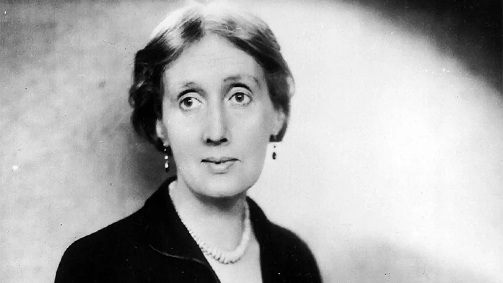
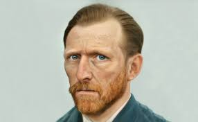

Casos reals
John Forbes Nash: El brillant matemàtic conegut per la seva àmplia carrera en el món de les matemàtiques, va haver de lluitar contra l’esquizofrènia. Va ser diagnosticat amb esquizofrènia paranoide, la qual li provocava moltes al·lucinacions. L’any 1950, la seva malaltia es va tornar severa. Aquesta situació el va obligar a passar tres anys en institucions mentals on li feien teràpies d'electroshock. Forbes va comentar que la malaltia li va provocar grans problemes durant la seva carrera professional i fins i tot, va patir problemes familiars greus. Finalment, John es va poder estabilitzar gràcies a un canvi de pensament i en la implicació per a una automillora de salut mental.
Virginia Woolf va tenir un final desastrós, va acabar suïcidant-se a conseqüència d'un quadre mental. Va patir al·lucinacions auditives i canvis de personalitat que el van portar a aquests fets. Tot i això, la seva producció literària no es va veure mai interrompuda per aquests trastorns, fins al seu suïcidi el 1941.
La figura artística de Vincent van Gogh sempre ha estat envoltada de multitud de polèmiques. Molts experts en la matèria afirmen que el pintor postimpressionista va patir esquizofrènia. Aquestes hipòtesis han estat verificades per un total de 150 metges.
